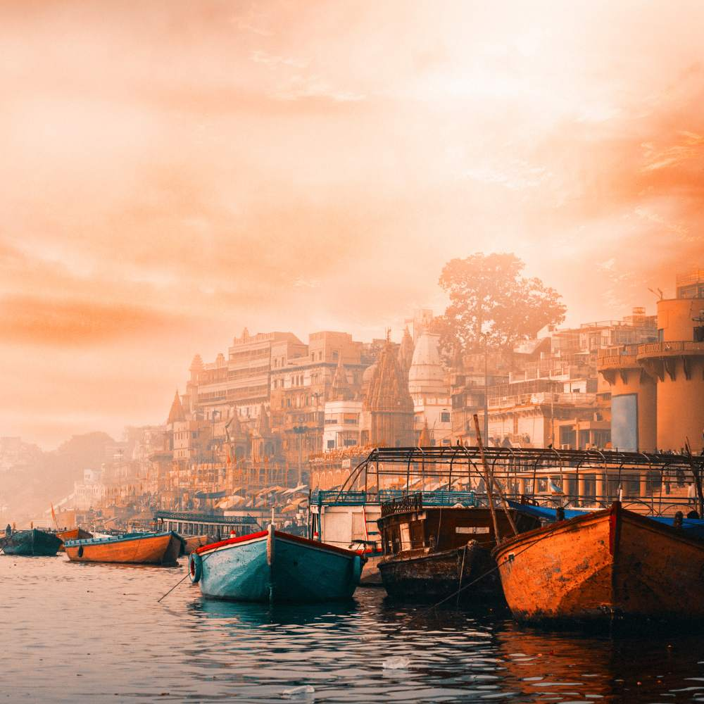
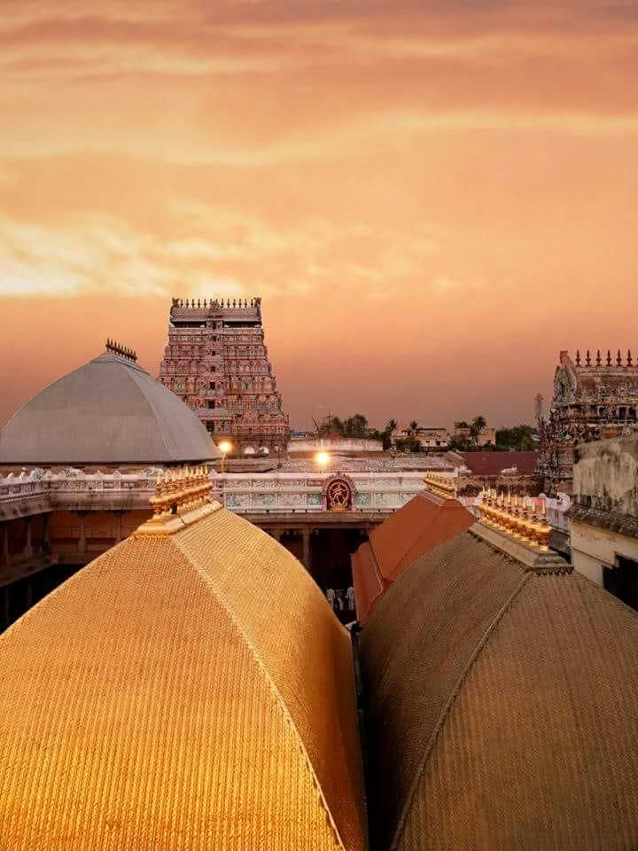

Varanasi
Varanasi, also known as Kashi, is a sacred Hindu city situated on the banks of the Ganges River, considered one of the oldest living cities in the world and a major pilgrimage site for Hindus seeking liberation from the cycle of rebirth.
Chidambaram Nataraja Temple
The Thillai Nataraja Temple in Chidambaram, dedicated to Lord Shiva, is believed that the main deities big toe as the center point of the world's magnetic equator, as suggested by some research and Western scientists.
Thanjavur Big Temple

The "Thanjavur Big Temple," also known as the Brihadeeswarar Temple, is a towering Chola-era Shiva temple renowned for its magnificent architecture.